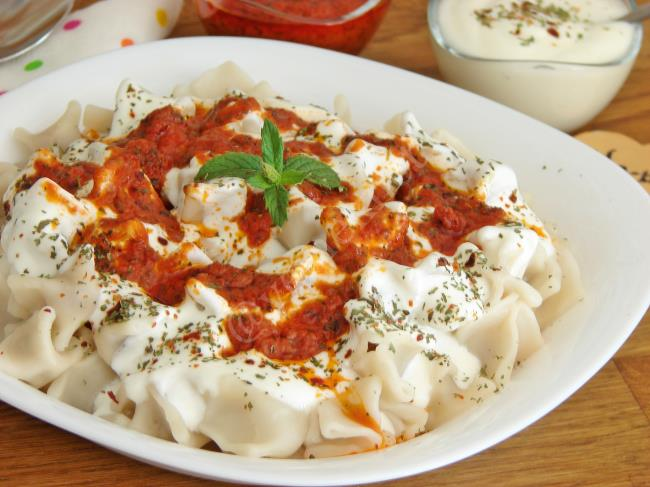

Mantı Recipe
Mantı is a traditional Turkish dish made of small dumplings filled with spiced minced meat, typically served with a garlic yogurt sauce and a drizzle of tomato or butter sauce. It's often topped with sumac, dried mint, or red pepper flakes. Think of it as Türkiye’s version of ravioli — smaller, spicier, and yogurt-based.
Ingredients
- Flour
- Minced Meat
- Yogurt
- Tomato Paste
- Olive Oil
Instructions
- In a bowl, mix flour and water to make a firm dough. Let it rest for 30 minutes.
- In a separate bowl, combine minced meat with salt, pepper, and optionally chopped onion.
- Roll out the dough thinly and cut it into small squares (~3 cm).
- Place a small amount of meat filling in the center of each square, then fold and seal tightly into a bundle.
- Boil salted water in a pot and cook the mantı until they float and the dough is soft (about 8–10 minutes).
- In a pan, heat olive oil and stir in tomato paste. Cook for 1–2 minutes to make a sauce.
- Serve mantı hot, topped with yogurt and the tomato paste sauce. Optionally sprinkle with sumac or dried mint.

Back to Recipes